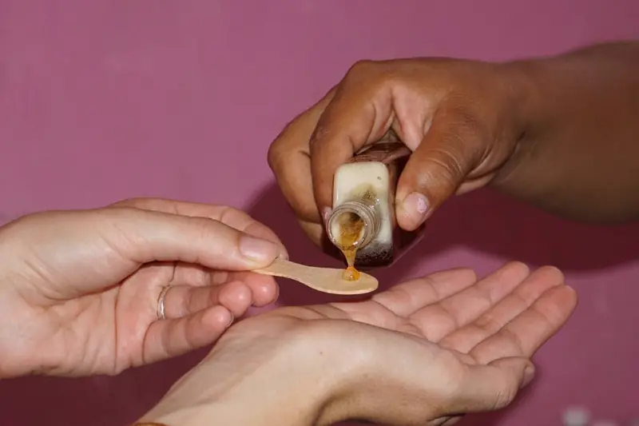

Demi-journée Essentiel
- Environ 4 h
- Niveau facile
- Matin ou après-midi
75 €(1 500 MXN) par personne
Une immersion courte mais complète au cœur de Yalcobá, entre nature, culture et gastronomie. Réalisable le matin comme l'après-midi, idéale à combiner avec Ek Balam ou Chichén Itzá.
- Rencontre avec Maritza et ses abeilles mélipones, dégustation de miel
- Baignade au cénote Xcanahaltun ou Chaachab
- Repas traditionnel chez une famille du village
- Fin de l'excursion